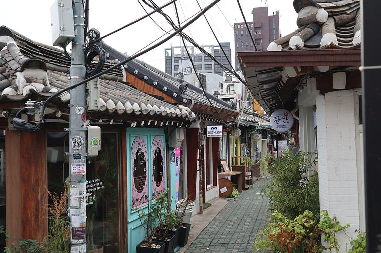
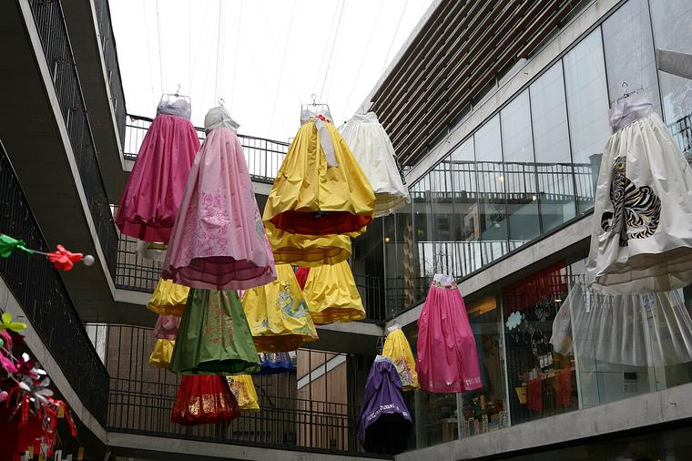
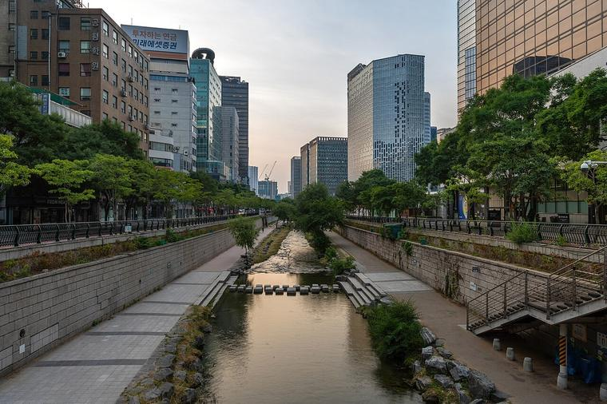

28окт · ср
Прилёт и Инсадон
- 08:40 Прилёт в Инчхон, терминал 1. Купите карту T-money: пополнить её можно только наличными, поэтому обменяйте немного денег прямо в аэропорту.
- В отель, на выбор: экспресс AREX до Seoul Station, затем метро линии 1 до станции Чонгак (выход 3-1) и 5–10 минут пешком. Или автобус-лимузин №6002 до остановки Чонно 3-га (JONGNO 3-GA), оттуда 7–10 минут пешком. У станции Ангук 6002 не останавливается. Билеты на AREX и автобус можно взять в кассе или автомате аэропорта по карте.
- до 15:00 Оставляем чемоданы и гуляем: деревня ханоков Иксон-дон с узкими улочками и кафе, пешеходная арт-улица Инсадон, ручей Чхонгечхон (10 минут пешком).

КварталИксон-дон
익선동Переулки с низкими ханоками, в которых теперь кафе и рестораны. Находится рядом с отелем.
Фото ↗
Арт-улицаИнсадон
인사동Пешеходная улица галерей, чайных домов и лавок с традиционными сувенирами.
Фото ↗
ПрогулкаЧхонгечхон
청계천Ручей, проложенный через центр города между небоскрёбами. Хорошо гулять вечером.
Фото ↗Ночуем Hotel Jak Insadong by Anook · 인사동14길 48